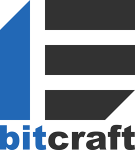

Business Solution Area https://www.bitcraft.co.jp/jp/
bitcraf's core offering is tailor-made server development. Capitalizing on past project experience, we deliver server development and operation services with extremely high standards in terms of security, stability, reliability and scalability. Our know-how enables us to develop cost-effective, relevant solutions, while avoiding common pitfalls such as short-sighted technological choices.